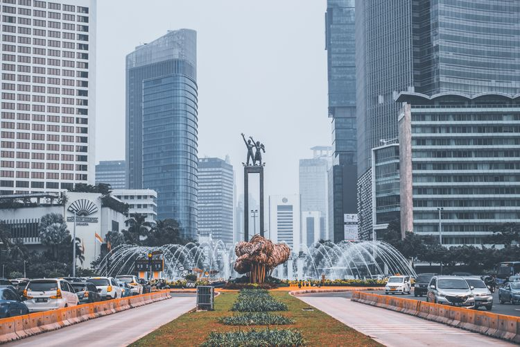

Jakarta Resmi Kehilangan Status Daerah Khusus Ibu Kota sejak 15 Februari, Ini Alasannya"
Jakarta
KOMPAS.com - Status Daerah Khusus Ibu Kota (DKI) yang disematkan pada Jakarta, habis sejak 15 Februari 2024.
Berakhirnya status ibu kota seiring implementasi Undang-Undang (UU) Nomor 21 Tahun 2023 tentang Perubahan atas UU Nomor 3 Tahun 2022 tentang Ibu Kota Negara (IKN).
Ketua Badan Legislasi Dewan Perwakilan Rakyat (Baleg DPR) Supratman Andi Agtas menyebutkan, status DKI Jakarta tertuang dalam UU Nomor 29 Tahun 2007 tentang Pemerintah Provinsi DKI Jakarta sebagai Ibu Kota NKRI.
Dengan adanya UU IKN, pihaknya pun harus segera membahas Rancangan Undang-Undang Daerah Khusus Jakarta (RUU DKJ) guna mengatasi hilangnya status tersebut
Alasan status DKI Jakarta hilang
Diberitakan Kompas.id, Selasa (5/3/2024), Supratman mengungkapkan, dua tahun setelah UU IKN diundangkan sejak 15 Februari 2022, ketentuan dalam UU Nomor 29 Tahun 2007 dinyatakan diubah.
Hal tersebut sesuai ketentuan dalam Pasal 41 ayat (2) UU IKN yang berbunyi:
"Paling lama 2 (dua) tahun sejak Undang-Undang ini diundangkan, Undang-Undang Nomor 29 Tahun 2007 tentang Pemerintahan Provinsi Daerah Khusus Ibu Kota Jakarta sebagai Ibu Kota Negara Kesatuan Republik Indonesia diubah sesuai dengan ketentuan dalam Undang-Undang Ini."
Namun, status Jakarta sebagai ibu kota sendiri baru bisa tergantikan oleh IKN Nusantara di Kalimantan jika telah terbit Keputusan Presiden.
Ketentuan penggantian status tersebut sebagaimana tertulis dalam Pasal 41 ayat (1) UU IKN, yang berbunyi:
"Sejak ditetapkannya Keputusan Presiden sebagaimana dimaksud dalam Pasal 39 ayat (1), ketentuan Pasal 3, Pasal 4 kecuali fungsi sebagai daerah otonom dan Pasal 5 Undang-Undang Nomor 29 Tahun 2007 tentang Pemerintah Provinsi Daerah Khusus Ibu Kota Jakarta sebagai Ibu Kota Negara Kesatuan Republik Indonesia dicabut dan dinyatakan tidak berlaku."
Oleh karena itu, menurut Supratman, Baleg DPR akan mempercepat pembahasan RUU DKJ, imbas hilangnya status DKI pada provinsi ini.
"Dalam waktu seminggu sampai sepuluh hari kerja, harus selesai karena DKI sudah kehilangan status per 15 Februari kemarin,” ujar Supratman.
Jakarta masih mengacu UU Nomor 29 Tahun 2007 Di sisi lain, Direktur Eksekutif Komite Pemantauan Pelaksanaan Otonomi Daerah (KPPOD) Herman N Suparman mengatakan, kekosongan hukum berkaitan dengan status Jakarta memang tengah terjadi.
Kendati demikian, Jakarta tetap dapat mengacu pada UU Nomor 29 Tahun 2007 lewat pengaturan otonomi khusus. Menurutnya, aturan itu masih mendukung berbagai pembangunan yang berlangsung di Jakarta.
Percepatan perampungan RUU DKJ pun tidak boleh mengesampingkan esensi bagi publik, sehingga tidak sekadar kepentingan politik.
Salah satunya, berkenaan dengan pasal kontroversi pemilihan gubernur dan wakil gubernur ditunjuk oleh presiden.
"Melihat Jakarta beberapa tahun ini, saat dipimpin penjabat gubernur yang ditunjuk oleh pemerintah pusat, ada suatu distrust atau ketidakpercayaan dari masyarakat," kata herman.
"Ini sangat mengganggu kegiatan pemerintahan daerah mulai dari pelayanan, penganggaran, dan lainnya," imbuhnya.
Pemerintah tugaskan menteri bahas RUU DKJ
Dilansir dari Kompas.com, Selasa, rapat paripurna DPR pada Selasa kemarin mengumumkan, pemerintah telah menugaskan beberapa menteri untuk membahas RUU DKJ.
Menteri yang dimaksud meliputi Menteri Dalam Negeri, Menteri Keuangan, Menteri Perencanaan Pembangunan Nasional, Menteri Pendayagunaan Aparatur Negara dan Reformasi Birokrasi, serta Menteri Hukum dan HAM.
"DPR RI juga sudah menerima surat R03/Pres/01/2024 tanggal 5 Desember 2023 sudah dibacakan pada 6 Februari pada paripurna lalu terkait hal penyampaian rancangan tentang Provinsi Daerah Khusus Jakarta," kata Wakil Ketua DPR Sufmi Dasco Ahmad dalam rapat paripurna, di Kompleks Parlemen Senayan, Jakarta, Selasa.
Dasco mengatakan, pemerintah melalui menteri-menteri tersebut dapat membahas di DPR secara bersama ataupun terpisah.
"(Menteri-menteri) baik bersama-sama maupun sendiri-sendiri untuk mewakili pemerintah dalam pembahasan RUU dalam usul inisiatif Baleg DPR RI," jelasnya.
Baleg pun tengah mengagendakan rapat kerja dengan Menteri Dalam Negeri dengan prioritas pembahasan Pasal 10 RUU DKJ yang mengatur penunjukan Gubernur Jakarta oleh presiden.
"Poin krusial itu, kan, hanya Pasal 10," ungkap Supratman.